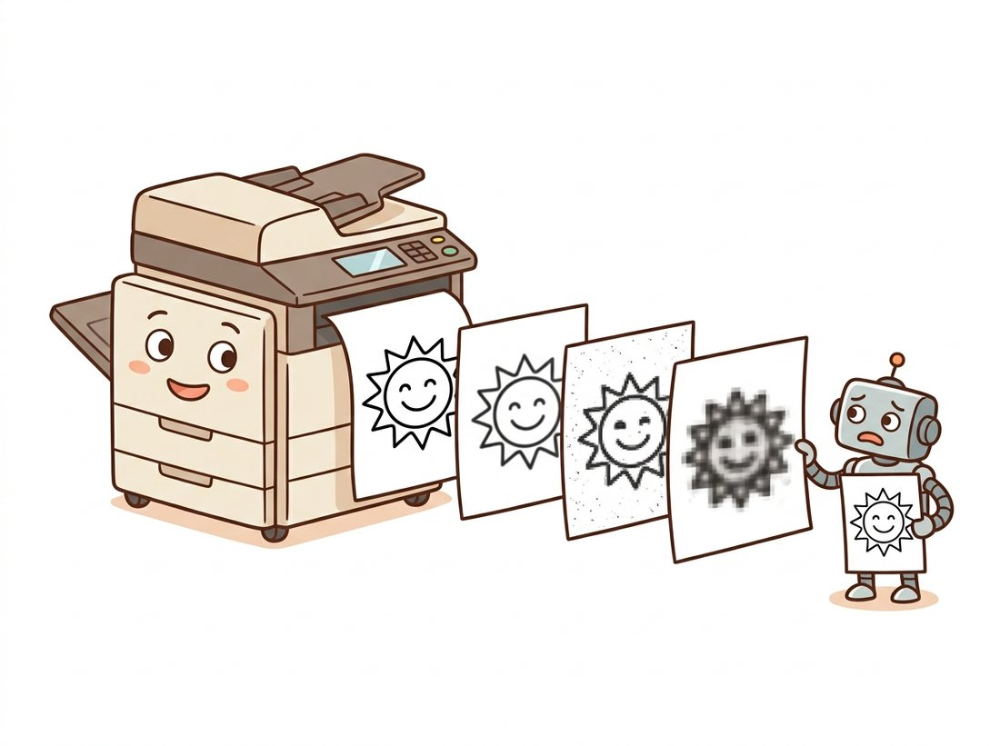

"I was written to disk at quality 75. I have never felt whole since."
A Slightly Compressed JPEG
Image I/O is where data integrity is won or lost, and it is governed by decisions your code makes even when you do not make them explicitly. Every read chooses a dtype and a channel order; every write chooses a format, a bit depth, and possibly an irreversible quality loss; every display applies a normalization you did not ask for. This section makes those three sets of hidden decisions visible and puts you in charge of them, completing the toolkit that Section 0.5 assembles into a full pipeline.
More vision projects lose data to a careless read or write than to any clever algorithm; a single wrong flag can turn your color photo into a grayscale one, or quietly halve its bit depth, without raising a thing. The previous section mapped the libraries; this one puts them to work on the least glamorous and most failure-prone part of any vision system: the boundary between your program and the file system. The mental model to carry through is the round trip in Figure 0.3.1: a compressed file is decoded into the array world of Section 0.1, transformed there, and encoded back out, with each crossing of the boundary making consequential choices.
1. Reading Images Without Getting Burned Beginner
The workhorse reader is cv2.imread, and it has one behavior you must internalize on day one: when it cannot read a file, it does not raise an exception; it returns None. A typo in a path, a missing file, a corrupted download, an unsupported format: all produce the same silent None, which then explodes two functions later with a baffling AttributeError: 'NoneType' object has no attribute 'shape'. Professional code wraps the call:
from pathlib import Path
import cv2
import numpy as np
def load_bgr(path: str | Path) -> np.ndarray:
"""Read an image as uint8 BGR, raising loudly instead of returning None."""
path = Path(path)
if not path.is_file():
raise FileNotFoundError(f"No such image file: {path}")
img = cv2.imread(str(path), cv2.IMREAD_COLOR)
if img is None: # decodable file but unreadable content
raise ValueError(f"OpenCV could not decode: {path}")
return img
# img = load_bgr("photo.jpg") # raises immediately on bad paths
None into an immediate, descriptive exception; the ten extra lines here save hours of downstream confusion.The second argument to imread is the read flag, and it determines the shape and dtype of what you get. The three flags worth memorizing: IMREAD_COLOR (the default) always yields 3-channel 8-bit BGR, converting grayscale up and dropping alpha; IMREAD_GRAYSCALE always yields a single-channel 8-bit array, converting color down; and IMREAD_UNCHANGED gives you the file as it truly is, including a 4th alpha channel or 16-bit depth when present.
import cv2
import numpy as np
# Create a 16-bit PNG and a 4-channel PNG to read back.
deep = (np.linspace(0, 65535, 200*300).reshape(200, 300)).astype(np.uint16)
cv2.imwrite("deep.png", deep)
rgba = np.dstack([np.full((64, 64), v, np.uint8) for v in (10, 20, 30, 128)])
cv2.imwrite("rgba.png", rgba)
print(cv2.imread("deep.png", cv2.IMREAD_COLOR).dtype) # uint8 (crushed!)
print(cv2.imread("deep.png", cv2.IMREAD_UNCHANGED).dtype) # uint16 (preserved)
print(cv2.imread("rgba.png", cv2.IMREAD_COLOR).shape) # (64, 64, 3) alpha dropped
print(cv2.imread("rgba.png", cv2.IMREAD_UNCHANGED).shape) # (64, 64, 4) alpha kept
IMREAD_COLOR silently crushes a 16-bit image to 8 bits and discards alpha, while IMREAD_UNCHANGED delivers the file's true dtype and channel count.That silent 16-to-8-bit crush in the first print is the file-reading twin of the dtype accidents from Section 0.1, and it is why scientific and medical pipelines standardize on IMREAD_UNCHANGED or on imageio, whose iio.imread returns the native dtype by default. Remember also, from the ecosystem tour in Section 0.2, that cv2.imread returns BGR while every other reader (scikit-image, imageio, Pillow via np.asarray) returns RGB; whichever you pick, the conversion cv2.cvtColor(img, cv2.COLOR_BGR2RGB) belongs at the boundary, a discipline Section 0.4 elevates into a rule.
A file is not an array; it is an encoding from which a decoder constructs an array, making choices along the way: which dtype, which channel order, what to do with alpha, whether to honor the EXIF rotation tag (Pillow can, OpenCV does not), how to upsample JPEG's subsampled color planes. Two libraries reading the same file can legitimately hand you different arrays. "What did my decoder decide?" is a question worth answering once per project, in code, with printed shapes and dtypes.
2. Writing: Choosing Formats and Quality Deliberately Beginner
cv2.imwrite(path, img) picks the output format from the file extension, full stop. Writing result.jpg invokes the JPEG encoder at its default quality of 95; writing result.png invokes lossless PNG. The third argument fine-tunes the encoder, and with JPEG the quality parameter trades file size against irreversible information loss:
import cv2
import numpy as np
import os
rng = np.random.default_rng(7)
# A textured synthetic image: smooth gradient plus mild noise.
base = np.linspace(60, 200, 640, dtype=np.float32)
img = (np.tile(base, (480, 1)) + rng.normal(0, 12, (480, 640))).clip(0, 255)
img = cv2.cvtColor(img.astype(np.uint8), cv2.COLOR_GRAY2BGR)
for q in (95, 50, 10):
cv2.imwrite(f"q{q}.jpg", img, [cv2.IMWRITE_JPEG_QUALITY, q])
cv2.imwrite("lossless.png", img, [cv2.IMWRITE_PNG_COMPRESSION, 3])
for f in ("q95.jpg", "q50.jpg", "q10.jpg", "lossless.png"):
back = cv2.imread(f)
err = np.abs(back.astype(np.int16) - img.astype(np.int16)).mean()
print(f"{f:13s} {os.path.getsize(f)/1024:7.1f} kB mean |error| = {err:.2f}")
# q95.jpg 258.8 kB mean |error| = 1.41 (typical values; yours
# q50.jpg 74.2 kB mean |error| = 3.06 will vary slightly by
# q10.jpg 23.0 kB mean |error| = 6.70 OpenCV/libjpeg version)
# lossless.png 314.6 kB mean |error| = 0.00
The deeper rule behind the numbers: JPEG is lossy and PNG is lossless, and the loss compounds. To see the compounding for yourself, take the quality-75 file above and do nothing but open it and re-save it as JPEG, again and again: each generation quantizes coefficients that the previous generation already quantized, so the mean error climbs with every loop and visible blocks creep across smooth sky long before generation fifty. It is the digital equivalent of photocopying a photocopy; the tenth copy is plainly worse than the first, yet no single save looked destructive. This is why editing pipelines keep a lossless master and export lossy copies exactly once, at the end. Why JPEG discards what it discards (high-frequency detail your eye barely misses) is a beautiful story about the frequency domain told in Chapter 4, and the formats themselves get a full treatment in Chapter 1. The illustration below makes the compounding loss visible.

Difficulty: beginner, about 30 minutes. Turn the compounding-loss idea into something you can show. Write a script that loads one photo, then re-encodes it as JPEG and decodes it back fifty times in a loop, saving every tenth generation and recording the mean absolute error against the original after each pass. Plot error versus generation number, and stitch the saved generations into an animated GIF with imageio (Code Fragment 5 shows the one-call GIF write) so the artifacts visibly creep across smooth regions. This uses only this section's tools: cv2.imencode and cv2.imdecode for the in-memory round trip (no temp files needed), the error metric from Code Fragment 3, and an honest Matplotlib plot. The payoff is a single shareable animation that makes "lossy compression is a one-way door" undeniable; it is a clean portfolio piece and a teaching aid you will reuse when colleagues doubt that re-saving hurts.
One more writing rule from the trenches: cv2.imwrite assumes uint8 (or uint16 for PNG and TIFF). Hand it a float image in $[0, 1]$ and you get a near-black file, so convert explicitly with $x_{\text{uint8}} = \lfloor 255\,x + 0.5 \rfloor$ or img_as_ubyte before writing.
The quality dial running up to 100 invites the belief that the top of the scale is lossless, so saving at quality 95 or 100 is "safe." In fact every standard JPEG save is lossy at any quality: even at 100 the encoder still converts to a luminance-chrominance space, may subsample the color planes, and quantizes discrete-cosine-transform coefficients, so the decoded pixels rarely match the originals bit for bit (notice that quality 95 in Code Fragment 3 already shows a nonzero mean error). Quality 100 merely makes the loss small and the file large; it does not make it zero. When you genuinely need an exact round trip, for a processing master, a segmentation mask, or any image fed back into a model, reach for a lossless format such as PNG or lossless TIFF, not high-quality JPEG.
Who: A backend team at an online marketplace where sellers upload product photos.
Situation: Every editing action (crop, brighten, watermark) was implemented as load JPEG, edit, save JPEG at the service's default quality of 80.
Problem: Photos edited several times accumulated visible compression artifacts: ringing around text, blocky gradients on smooth backgrounds. Support tickets blamed "blurry uploads", but uploads were fine; the marketplace itself was degrading them, one save at a time.
Decision: The team switched to keeping a lossless (PNG) master per photo, applying every edit to the master, and exporting a JPEG at quality 90 only at delivery time, exactly once.
Result: Artifact complaints stopped, and storage costs rose far less than feared because masters were deduplicated while delivery JPEGs stayed small.
Lesson: Lossy compression is a one-way door. Architect pipelines so each image walks through it once, on the way out.
3. Displaying Images Honestly Intermediate
For interactive work, the display tool of this book is Matplotlib's imshow, which works identically in scripts, notebooks, and remote environments. It has two behaviors that mislead beginners, both fixable with one argument. First, it assumes RGB, so OpenCV images must be converted before display (or red and blue swap, the signature glitch dissected in Section 0.4). Second, for single-channel images it auto-normalizes: the darkest pixel present becomes black and the brightest becomes white, which silently exaggerates contrast and can make two very different images look identical. Pin the scale with vmin and vmax when absolute brightness matters.
import cv2
import numpy as np
import matplotlib.pyplot as plt
img = cv2.imread("q95.jpg") # BGR from Code Fragment 3
gray = cv2.cvtColor(img, cv2.COLOR_BGR2GRAY)
dim = (gray * 0.3).astype(np.uint8) # a genuinely dark version
fig, axes = plt.subplots(1, 3, figsize=(12, 4))
axes[0].imshow(cv2.cvtColor(img, cv2.COLOR_BGR2RGB)) # convert BEFORE imshow
axes[0].set_title("color (BGR converted to RGB)")
axes[1].imshow(dim, cmap="gray") # auto-normalized: looks bright!
axes[1].set_title("dark image, default scaling")
axes[2].imshow(dim, cmap="gray", vmin=0, vmax=255) # honest absolute scale
axes[2].set_title("same image, pinned scale")
for ax in axes:
ax.axis("off")
plt.tight_layout()
plt.show()
vmin=0, vmax=255 when you need the screen to tell the truth about absolute brightness rather than stretch contrast.OpenCV's own cv2.imshow window (paired with cv2.waitKey) remains useful for high-rate video debugging on a desktop with a graphical user interface, but it does not work in notebooks or headless servers, so we default to Matplotlib throughout. Whichever display you use, cultivate the habit of looking at your images at every pipeline stage; the visual check in Code Fragment 4 would have caught, in one glance, every bug story this chapter tells.
The auto-normalization that makes Matplotlib "lie" about dark images is the same mechanism that makes it superb at displaying float images, gradient maps, and depth maps without any manual scaling. The feature and the trap are one and the same line of code. Tools have personalities; learn them like colleagues.
4. Beyond 8-Bit Photos: imageio and the Long Tail Intermediate
Sooner or later a project hands you something cv2.imread handles awkwardly or not at all: a 16-bit microscopy TIFF stack, an animated GIF, frames from a video file, an OpenEXR float image. The clean general-purpose answer is imageio's v3 API, one read function with native-dtype results and RGB order:
import imageio.v3 as iio
import numpy as np
deep = iio.imread("deep.png") # the 16-bit file from Code Fragment 2
print(deep.dtype, deep.max()) # uint16 65535 -> native depth, no crush
# Animated GIF in one call: a stack of frames, shape (n_frames, H, W, C).
frames = np.stack([np.full((64, 64, 3), v, np.uint8)
for v in (0, 64, 128, 192, 255)])
iio.imwrite("pulse.gif", frames, duration=200, loop=0)
print(iio.imread("pulse.gif").shape) # (5, 64, 64, 3) ... wait, 4 channels?
# (5, 64, 64, 4) on some plugins: GIF palettes may decode with alpha. Check!
Video deserves a sentence of its own: both OpenCV (cv2.VideoCapture) and imageio can iterate the frames of a video file as arrays, which is how the video understanding systems of Chapter 26 ingest their data. From the array's point of view, a video is just a fourth axis.
It is worth pausing on what hides behind a single iio.imread("scan.tiff") or cv2.imread call. A from-scratch PNG reader alone means implementing zlib inflation, five scanline filter types, interlacing, palette expansion, and gamma chunks: a published reference implementation runs well over 200 lines before error handling. TIFF is worse (it is a container, not a format), and JPEG worse still (entropy decoding, dequantization, inverse discrete cosine transform or DCT, chroma upsampling). The library call is a 200-plus-to-1 line reduction per format, and what the library handles internally, beyond raw decoding, is exactly the minefield this section walked: dtype selection, channel-order normalization, alpha policy, and metadata. This is the "right tool" principle at its starkest; nobody should hand-roll codecs, and after Chapter 4 explains the DCT you will know precisely what you are not reimplementing.
The format landscape is moving for the first time in decades. AVIF (AV1-based) is now decodable in every major browser and increasingly in Python via plugins, offering JPEG-class images at half the bytes. JPEG XL (ISO/IEC 18181), designed as JPEG's official successor with lossless JPEG recompression, shipped OS-level support in Apple platforms from 2023 onward and continues to gain adoption through 2025-2026, with Pillow support available via plugin packages. Meanwhile research has gone end-to-end learned: neural codecs following Ballé et al.'s hyperprior line now beat classical codecs on perceptual quality, and diffusion-decoder approaches such as PerCo (ICLR 2024) reconstruct plausible images at extreme compression ratios around 0.003 bits per pixel, blurring the boundary between compression and the generative models of Part IV. The throughline for practitioners: the array interface you learned in Section 0.1 is stable; only the encoders behind imread keep getting smarter.
5. A Checklist for the I/O Boundary Beginner
Condensing the section into habits: (1) wrap readers so failures raise immediately, with the path in the message; (2) choose the read flag (or library) that preserves what the file actually contains, especially bit depth and alpha; (3) convert color order at the boundary, not "wherever"; (4) keep lossless masters and pass through lossy encoding exactly once; (5) when displaying, convert to RGB and pin the value range when absolute intensity matters. Five lines of discipline, and the entire file system becomes a safe place. The next section turns to the conventions themselves, the four recurring clashes that all the warnings above have been circling.
OpenCV chose to return None from a failed imread rather than raise an exception, and has kept that behavior for two decades. Give two plausible engineering arguments for the design (consider C++ heritage and batch processing of unreliable file lists), two arguments against it in modern Python services, and state the policy you would adopt for a team codebase. There is a defensible answer on each side; the indefensible position is not having a policy.
Write save_image(path, img) that accepts uint8, uint16, or float arrays and never silently corrupts data: floats in $[0, 1]$ are rescaled and rounded to uint8 (or to uint16 when the target extension is .png or .tiff and a deep=True flag is set), floats outside $[0, 1]$ raise ValueError with the offending range in the message, and unknown dtypes raise TypeError. Round-trip test every branch by reading the file back and asserting dtype and maximum error.
Extend Code Fragment 3 into a study: for JPEG qualities 10 through 100 in steps of 10, record file size and mean absolute reconstruction error, on (a) the noisy gradient image from the fragment and (b) a synthetic image of sharp text-like rectangles. Plot size against error for both. Identify the quality region where each curve bends (the knee), explain why the two images bend differently, and recommend a quality setting for archiving scanned documents, justifying it from your data.